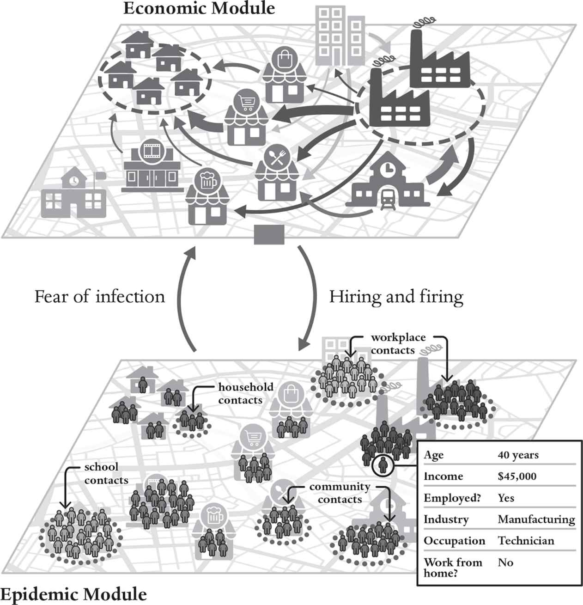

For most problems found in mathematics textbooks, mathematical reasoning is quite useful. But how often do people find textbook problems in real life?
Computers allow us to mimic just about anything. Boeing creates a full-blown virtual-reality simulacrum of every plane it designs. Pilots fly simulated planes whose controls and responses look and feel much like those of a real plane, and virtual flight attendants walk down the aisles and serve drinks to simulated passengers to make sure the seats and trays are well placed. Although there are still limits to their capabilities, computer simulations now enable us to create digital twins of countless real-world systems, and they play an important role in almost every branch of science, including the social sciences – except for mainstream economics!
A simulation is often preceded by building a network model. You can think of the network as the skeleton, and the simulation as the living tissue filling out the skeleton and enabling the body to function. A simulation goes beyond a network model by capturing the dynamics: How do the nodes and links, and their properties, change over time? Simulation is a bottom-up approach, acting at the level of the individual building blocks, letting the collective behavior of the system emerge. By definition, emergent behavior is bottom-up, and simulation is often the only method for understanding it.
Simulation in the social sciences is more challenging than it is in the physical sciences. Atoms don’t think or make choices, while stars obey the laws of gravity, which are precise, inviolable and well understood. But there are no laws that can reliably tell us how people will behave in any possible situation. People have agency; they make decisions, which are much more difficult to predict than physical processes. There is now a huge body of work in psychology and sociology that helps us understand how people behave; nonetheless, our models for human behavior are still imprecise and controversial, and, most important, they don’t cover all aspects of economic decision-making.
Agent-based models have been very successful for problems where decision-making is reasonably simple. A good example is traffic modeling, in which drivers are the agents.2 In a traffic simulation, each simulated driver interacts with simulated drivers in nearby cars, speeding up and slowing down as needed. Traffic jams are a simple example of an emergent phenomenon: As soon as one driver slows down on a crowded road, those behind must slow down too. Cars begin to pile up, which causes even more slowing down, until the traffic comes to a near-halt. Agent-based models do a good job of predicting the conditions that can lead to traffic jams, and they help city planners design transportation systems. Some cities, such as Portland, Oregon, have built hyper-realistic simulations, with a one-to-one representation of every road, building and almost every car, and there are now several competing companies that provide traffic simulation for hire.3 These simulations accurately predict travel times under different conditions, allowing planners to ask ‘what-if’ questions and experiment with adding or closing lanes or building bridges to see how such changes would affect traffic. One of the reasons traffic modeling works well is that the decision-making isn’t very complicated and is easily captured by simple rules of thumb, involving factors like the typical minimum spacing between cars and the typical reaction time for braking.
Agent-based models have also become essential tools in epidemiology. Epidemic simulations track the movements and interactions of individual people, who can be healthy, infected or immune. Such models can incorporate transportation routes and flight schedules connecting cities and the locations of hospitals and schools. Simulations can investigate ‘what-if’ scenarios and, in some cases, they have accurately forecast the likely effect of vaccination protocols or other public-health measures, helping to achieve the best possible outcomes with the least effort.
The COVID pandemic presented a challenge to epidemic simulations for two reasons. At the onset, there was a great deal of uncertainty about how the virus was transmitted and whether or not it could be transmitted by people who were asymptomatic. Disease propagation depends crucially on these parameters, which threw off the predictions of the models in the early stages of the pandemic. As data poured in, these parameters became more certain, but another problem appeared: People began to change their behavior. In some places, people were careful about wearing masks and following social-distancing protocols, and in other places they weren’t. As time wore on, in some places there was a backlash against masks and vaccinations, sometimes fueled by politics – circumstances difficult to predict in advance. Despite these problems, the best models provided useful predictions that helped policymakers make better decisions.4
Simulation models are never perfect, but they can be good enough to be useful.5 We’ll discuss the controversies about models based on human behavior in Chapters 5 and 6. But, before we delve into that, we need to understand an essential advantage of agent-based models, which is the graceful and effortless way they incorporate nonlinearity.
Nonlinearity is a necessary condition for emergence; without nonlinearity, there would be no emergence and thus no such thing as a complex system. Nonlinearity underpins almost all the big, interesting open questions – such as the origins of intelligence, consciousness and life – as well as the recent huge advances in machine learning. It also plays important roles in the economy – roles that have yet to be properly explored and can be fully understood only through simulation.
By definition, a system is nonlinear if the whole is different from the sum of its parts. In contrast, a system is linear if the whole is equal to the sum of its parts. Nonlinearity is the norm in the real world and economics is no exception. For example, as already mentioned, production functions describe how much a firm or industry can produce with a given set of inputs. A production function is like a basic recipe with a list of possible variations. In some cases a single input may be absolutely essential, or in other cases substitutions may be allowed. The amount that is produced is not simply the sum of the inputs, but rather depends on the inputs in a more complicated way, which means that the formula relating the inputs to the outputs is a nonlinear function.6 In Chapter 7 we’ll see how the nonlinearities of the production function can give rise to oscillations in the economy that look like business cycles, and in Chapter 11 we’ll see how the nonlinear behavior of loan repayment can cause the financial system to crash.
It is often tempting to avoid nonlinearities because they complicate mathematical analysis. Economists greatly prefer equations with what are called closed-form solutions – that is, formulas that can be used to simply plug in numbers and get the answer. All scientists like closed-form solutions, because they’re convenient and easy to understand. But the quest for closed-form solutions often distracts economists from solving the most important problems. Economists love mathematics and eschew simulations. Our understanding of economics has suffered as a result.
Before the advent of the computer, the mathematical arsenal for scientists was limited to what they could solve with pencil and paper. This put an enormous premium on finding closed-form solutions. Because linear equations always have closed-form solutions and nonlinear equations rarely do, expedience dictated that almost all models in science were based on linear mathematics. The world of nonlinear mathematics remained largely unexplored.
When I was a graduate student at UC Santa Cruz, in 1975, I was inspired by a lecture by Stan Ulam, one of the greatest twentieth-century mathematicians.7 He began by apologizing for the title of his lecture, which was ‘Nonlinear Mathematics’. Since almost everything is nonlinear, he said, calling mathematics nonlinear was like referring to ‘nonelephant’ animals. To illustrate his point, Ulam told a standard joke about a mathematician who is found searching for something under a lamppost. A passerby asks, ‘What did you lose?’ and he replies, ‘My keys.’ Trying to be helpful, the passerby responds, ‘Can I help you look for them?’ The embarrassed mathematician responds, ‘Well, actually, I didn’t drop them here, I dropped them over there in the dark somewhere. But at least I can see here.’
Until digital computers arrived, most of science suffered because we couldn’t solve most of the equations we needed to solve to understand the world. All we could do was look under lampposts. The linear ground under the lampposts got thoroughly explored, while the nonlinear areas outside the circle of available light were neglected. Ulam was one of the earliest mathematicians to use computers to explore nonlinear mathematics, and one of the first to demonstrate emergent behavior in complex systems.8
The fact that almost all equations are nonlinear doesn’t mean that almost all equations lead to emergent phenomena. The presence of nonlinearity per se doesn’t imply emergent behavior. In fact, usually it doesn’t. Complex systems are special. We cannot say in advance whether or not a set of nonlinear equations will give rise to emergent phenomena; this almost always requires simulating them on a computer. Restated in logical terms, nonlinearity is necessary but not sufficient for emergent behavior. In a world where almost everything is nonlinear, computer simulations are an essential tool for science. Simulation via agent-based modeling provides us with a laboratory to explore the economic world – to boldly go where no one has gone before, and to study the world ‘as is’ rather than ‘as if’ it were something else.
When macroeconomists are confronted by nonlinear equations, because they are hard to work with, they often simplify them to make them linear. But because nonlinear dynamics is a prerequisite for endogenous dynamics – that is, motion from within – linearizing the equations makes it impossible for dynamics to emerge. If you want to understand a business cycle, linearizing guarantees that the (model) economy won’t move by itself. Agent-based models liberate us from these kinds of assumptions.
In the prologue I described the model we built at the beginning of the COVID pandemic that accurately predicted the hit to the UK economy. As the pandemic wore on, far longer than we imagined it would, it became clearer and clearer how the pandemic, the economy and the actions of governments around the world were intricately interlinked. While we could do the economics well, to make a proper model we needed to team up with epidemiologists. (We did not aspire to predict what the governments would do, only to advise them on what was likely to happen, conditional on their decisions.) To build a better model we teamed up with a group including Alessandro Vespignani, from Northeastern University in Boston. Alessandro is a leading figure in network science and agent-based modeling of pandemics, and his group made some of the most accurate and informative predictions during the pandemic.9
In an effort led by Marco Pangallo on our side, and Alberto Aleta from the epidemic side, we did something new: We built a model that simulated both the epidemiology and the economics of the pandemic in tandem (see Figure 6).10 This model was for the New York metropolitan area and gave predictions for the economic and epidemic impacts on a day-by-day basis. Both models used a synthetic population of 416,442 individuals grouped into 153,457 households.11 These numbers were picked to match a database of volunteers who consented to have their mobile phones tracked (though their identities were confidential). As shown in the figure, the synthetic population matched key demographic features of the real population, including age, income, employment, industry sector of employment, occupation and ability to work from home. The movements of the tracked volunteers allowed us to see how much they moved around the city, and therefore how likely they were to infect or be infected by others, and to determine whether they went to work. The models were coupled: If someone becomes unemployed, they cease to go to work and can no longer get infected in the workplace, whereas if someone who is previously unemployed becomes employed their danger of infection increases. The epidemic and economic models send signals to each other every day, which are incorporated into their forecasts for the following day.

Marco took advantage of data on the types of economic activity in each census tract to build a very fine-grained geographic model of the economics of the pandemic. This made it possible to predict how the pandemic would affect the economy geographically, enabling predictions conditional on poverty, race and age. It allowed us to study different policies to search for those that were ‘least bad’. We first demonstrated that the model did a good job of predicting the onset of the pandemic in 2020 (though in this case we had the benefit of hindsight, so we were really fitting to the data rather than making a true prediction).
Once we were confident in the model, we investigated a variety of different ‘what-if’ scenarios. For example, we showed that if the first New York lockdown had only been imposed a couple of weeks earlier, there would have been both far fewer deaths and much less economic suffering. We also showed that the tradeoff between economic suffering and epidemic deaths is similar whether outcomes change due to fear of infection or non-pharmaceutical inventions. In either case, low-income workers experience much higher infections and much worse economic harm.
Our model is innovative because it couples together two agent-based models, one for economics and one for epidemics, to provide useful policy analysis. This could be valuable during future pandemics in guiding policymakers to understand the tradeoff between different sources of harm. It also provides a proof of principle for how agent-based models from different disciplines can work together to provide better policy advice.
Shortly after the 2008 financial crisis, we built an agent-based model of the Washington DC housing market.12 There are several reasons why housing markets are an ideal candidate for agent-based modeling. First, as we learned the hard way in the crisis, housing markets are really important to the entire economy. Second, the way houses are bought and sold makes housing markets hard to model using standard theory (more on this in a moment). In contrast, our agent-based model simply mimics the institutional structures for buying and selling houses in the real world and employs rules of thumb that people actually use to make decisions. The model involves a lot of computer programming and data but the way it works will be familiar to anyone who has ever bought a house.
Using detailed data on real-estate transactions and mortgages, and information from the IRS and the US census, our model reproduced all the steps of buying or selling a house. We simulated the decisions of households to rent or buy and their interactions with banks and real-estate agents in taking out loans and buying and selling houses. Although this might sound like an obvious way to do things, it’s completely different from any existing mainstream economic model. The result provides useful insight into what drove the housing bubble that peaked in 2006, and how the next one can be avoided.
The housing bubble played a major role in the ensuing financial crisis. In real terms, between 1997 and 2006, US housing prices increased by almost a factor of 3 and then dropped by 30 per cent over the next four years.13 This had a significant effect on the economy for several reasons.
First, in the United States and many other countries, housing is the biggest repository of household savings. When housing prices drop, everyone who owns a house becomes poorer – so people spend less, which means that companies lower production and unemployment goes up. This means fewer people buy houses, which lowers housing prices further and makes people even poorer, creating a vicious cycle. This happens when any housing bubble bursts.
What made this bubble special, and made the bursting of the bubble particularly painful, is that banks had heavily invested in a recent financial innovation called mortgage-backed securities, which are bundles of mortgages. When the housing bubble burst, the value of mortgage-backed securities dropped substantially. Because they had been viewed as a safe investment, the biggest financial institutions throughout the world held lots of mortgage-backed securities. When their value dropped, this created a global credit crisis; the financial system abruptly switched from easy credit to no credit at all. As a result, many businesses couldn’t borrow the money they needed to operate, increasing unemployment, causing less consumption and depressing global economic output. Unfortunately, as noted in the Introduction, when it was consulted about the possible effect of a decline in housing prices in 2006, the Federal Reserve Bank model vastly underestimated how this would affect the economy.
But what caused the housing bubble? Possible explanations include lending practices, high interest rates and demographic shifts. How big a role did each of these play?
My collaborators and I were empowered to address these questions through a grant we received in 2010 from the Institute for New Economic Thinking, which was created with a large donation from George Soros. (This is the global Institute for New Economic Thinking, not the one at Oxford, which was founded two years later.) At the time, I was still at the Santa Fe Institute, where my fellow external-faculty member Rob Axtell was visiting. Rob is one of the pioneers of agent-based modeling (he was doing it long before I was), and he ran the Computational Social Science Program at George Mason University.14 To complete the roster of senior people on the team for this project, we enlisted the already-mentioned John Geanakoplos, who is, among other things, an expert on mortgage-backed securities and housing markets. Finally, we recruited Peter Howitt, then a professor at Brown and perhaps the only prominent mainstream economist who does agent-based modeling on the side.
Housing markets are a local phenomenon, so we decided to make our model on the scale of a typical American city. The housing bubble did not move in lockstep throughout the United States – there was a huge bubble in Las Vegas, for example, while the market stayed nearly flat in Dallas. Washington DC was somewhere in the middle, so it seemed like a good choice.
Data collection was a major challenge: We gathered extensive data sets on home prices, lending practices, income, wealth and demographics for the period 1997–2010, including several data sets specific to Washington. (It helped that Rob was based in Washington; his personal connections gave us access to data we would never otherwise have gotten.)
Our goal was to make the most realistic possible simulation of how houses are bought and sold. This meant modeling details like how people got loans from banks and how real-estate agents helped them find the right house. The agents in our model were households, who could be homeowners or renters. We simulated the behavior of 10,000 households in small runs and up to 100,000 in larger runs – fewer than the actual number of households in Washington but enough to provide a good sample. We created artificial households with different levels of income and wealth, so that they were representative of the actual households in the Washington DC area in roughly the right proportions.
The central question that each of our households faced was, ‘Should I rent or buy?’ Buying might result in a higher monthly payment, but in contrast to renting, some of it goes to pay off the principal (the amount borrowed). The decision of whether to rent or buy is strongly influenced by whether or not you expect prices to rise. If your neighbors own their houses and you don’t own yours, and housing prices go up, you’ll likely regret not buying. But if you expect prices to fall, then buying may not be wise. We built a model of the decision-making of prospective buyers. Each household estimated future house prices based on the recent trend; if house prices were currently going up, the households assumed they would keep going up, at least for a while. The fact that people make house-buying decisions this way is well supported by the data and is an example of what economists call backward-looking expectations. At the same time, our households thought about how future prices would affect them. Thus, our model for prospective buyers used a mixture of forward- and backward-looking expectations, based on research supported by data and common sense.
The fact that most people take out a mortgage when they buy a house raises the stakes. This leverages the investment, amplifying gains or losses. If you put 20 per cent down and prices go up by 20 per cent, you double your money, making 100 per cent on your investment, and you’re a happy camper. But if prices drop by 20 per cent, you lose your entire investment. The collapse of housing prices in 2007 caught many people by surprise, and the fact that many of them were strongly leveraged left them in dire straits.
Lending policy affects who has access to credit, something we hypothesized had a huge effect on house prices. To test this hypothesis, we simulated the process of taking out a housing loan. When our simulated households decided to buy a house, unless they were rich enough to buy the house outright, they went to a simulated bank to ask for a loan. The bank would consider each loan application, consider the household’s income and wealth, and accept or reject the application accordingly. The simulated bank offered several kinds of loans, ranging from simple, old-fashioned fixed-rate thirty-year mortgages to complicated, newfangled loans with variable rates and balloon payments. In the build-up to the actual crisis, lending policy became more liberal: It was easier to get a loan and the terms were more generous, often with higher leverage and a higher proportion of complicated loans. We were able to acquire a detailed data set with a record of almost all mortgages in Washington, so we could adjust our bank algorithm on a year-by-year basis to match the types of mortgages that were actually issued. We could also run counterfactual scenarios, for example holding the types of loans constant. Similarly, the interest rates at which loans are given could be adjusted to match historical rates, or we could make up hypothetical interest rates to assess their importance in driving the bubble.
Demography also plays an important role in determining house prices. If more people move to a city than move out of it, they will increase demand and drive prices up. We were able to acquire data based on tax returns that told us how many people in a given age and income range entered or left Washington each year.15 In the course of our simulation, for each year, we could introduce new households (who needed to buy or rent new houses) or put new houses on the market when they moved away from Washington. We also knew how many people put their houses up for sale and remained within Washington.
At the beginning of the simulation, we assigned households diverse incomes and wealth to match the real data in 1997. Then, for each household, we simulated subsequent savings and consumption behavior using the best economic models available.16 Most households’ incomes tended to slowly increase, but unlucky households could become unemployed and default on their mortgages.
Standard models in economics assume that supply equals demand. This is a reasonable approximation for the stock market on timescales of more than a day, but it is a terrible approximation for housing markets. The supply of houses available for sale at any point in time can be very far from the demand, so that at any given moment there can be a substantial mismatch between the number of houses on the market and the number of people looking for a house. As a result, housing prices often change sluggishly in response to changes in supply and demand, and the inventory of unsold houses varies significantly, based on the state of the housing market.
This meant we had to be more realistic in the way we set housing prices. Once again, we closely mimicked the way this actually happens. We were fortunate to obtain data from the association of real-estate agencies in the Washington area that recorded all the quoted asking prices for every house sold through an agency, as well as the final sale price. We analyzed this data and determined that housing prices are set like this: When a house is put on the market, the seller looks for recent sales of comparable houses and marks his or her own house up by a small amount, typically about 5 per cent. Then if the house doesn’t sell after a month, the seller marks it down by about 10 per cent, and continues marking it down until either the house sells or is taken off the market. (This will be familiar to anyone who has bought or sold a house, but remarkably, no other economic models set prices this way.)
We also modeled the rental market. This meant we had to model landlords, who buy houses to rent to others. This part of our model was less accurate, because we couldn’t get good data on rental prices.
We simulated the model on a monthly timescale. We began by initializing the model to match conditions at the beginning of 1997. Each month, the model would run through a series of steps like this:
Models always have parameters, which are like knobs that need to be adjusted to specify exactly what the model is. Some of the parameters are easy to pin down, like a tax rate, which you simply look up. Other parameters may not be so straightforward to set; we call these free parameters. Our model had quite a few of them. An example is the number of years households use for guessing trends in housing prices: Do people think a rise in house prices last year implies a rise next year? Or do they consider the last four years? Another parameter determines how much the household weights the need for housing relative to other forms of consumption. We could adjust the parameters to closely match the data. However, this didn’t necessarily show that the model was good – with enough free parameters, you can fit almost anything to historical data – and we wanted to be sure we were on solid ground.
To address this problem, we set the parameters for each part of the model separately, using microdata. For example, we adjusted the parameters for how the households set their housing budgets by looking at census data (which recorded how much individual households actually spent), and the parameters for their strategies for selling houses by looking at real-estate quotes, and so on. This was a lot of work – even more than constructing the original model. Then we put all the modules together and pushed Run. We started the model in 1997 and let it run without any intervention until 2010. The last value in the simulation was, in a sense, a thirteen-year-ahead prediction.17 To test the validity of our model, we then compared our simulation’s prediction to what actually happened in the Washington housing market during those thirteen years. The results are shown in Figure 7.
The plots shown in Figure 7 consider nine different features of the housing market. The match is by no means perfect; for example, the simulated bubble peaks before the real bubble and prices go a little higher. The model doesn’t fit every feature perfectly, but most of the time it’s in the ballpark. It is important to look at the scales on the plots – for home ownership rates, for example, we predicted rates around 60 per cent, whereas in reality they varied between 65 and 70 per cent. So we weren’t doing badly given that we were missing the data needed to calibrate some of the features, such as the rental market.
In addition to trying to match reality, we also did some counterfactual experiments. When we held interest rates constant at the initial (high) value, for example, the bubble in our simulation was damped. This was expected; low interest rates reduce monthly payments and so create more demand for housing. We also experimented with holding lending policy constant, with banks continuing to issue the same type of loans they were making in 1997, which were mostly fixed-rate with down payments of 20 per cent or more. The result was that the housing bubble almost disappeared, which confirmed our hypothesis that shifts in lending policy played a bigger role in causing the housing bubble than other factors, such as interest rates. The important role of lending policy is understood now, but it was by no means well established at the time we developed our model.